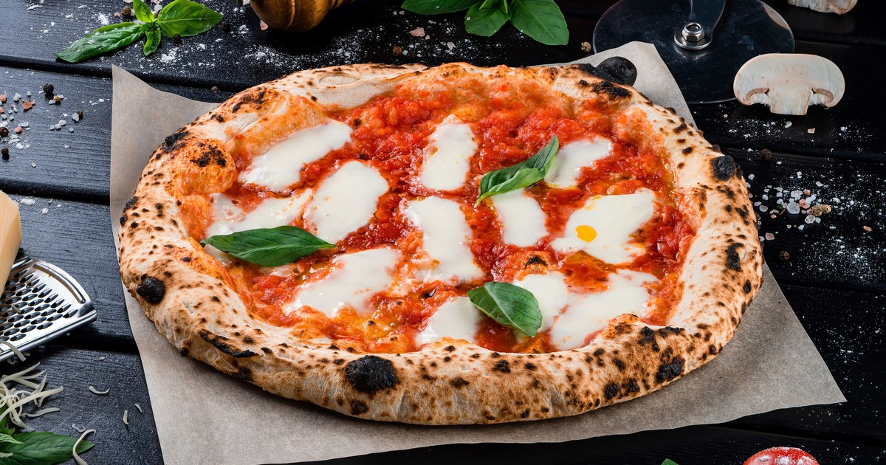
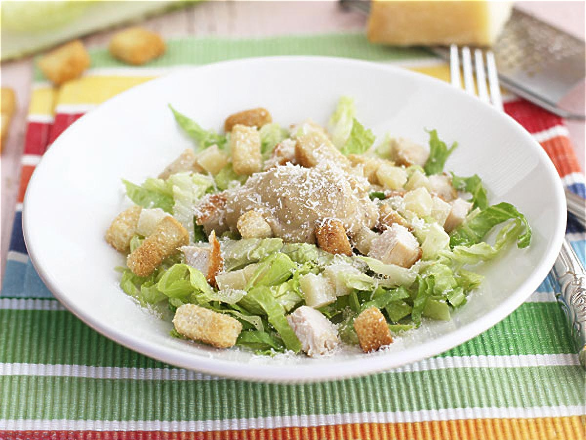
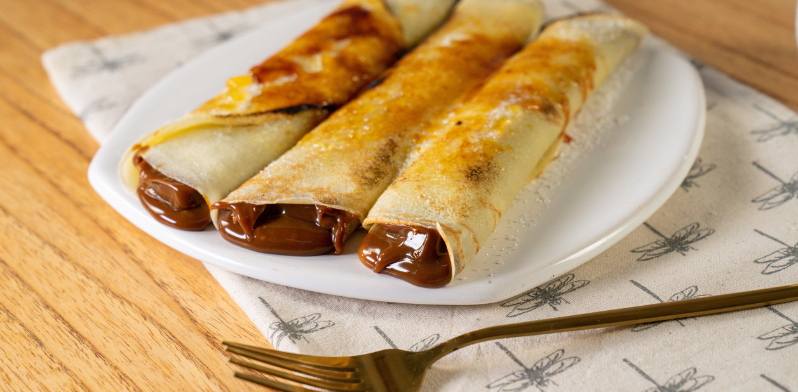

Pizza Margarita

Pasos
1. Mezclar harina, agua, levadura y sal para formar un bollo liso.
2. Dejar leudar la masa tapada durante al menos una hora.
3. Estirar la masa en una asadera y cubrir con salsa de tomate.
4. Hornear a fuego fuerte, agregar mozzarella y hojas de albahaca fresca al sacar.
Ensalada César

Pasos
1. Lavar y cortar la lechuga romana en trozos medianos.
2. Tostar cubos de pan en el horno con un hilo de aceite de oliva para los crutones.
3. Preparar el aderezo licuando mayonesa, anchoas, ajo, limón y queso parmesano.
4. Mezclar la lechuga con el aderezo, espolvorear los crutones y servir inmediatamente.
Panqueques con Dulce de Leche

Pasos
1. Batir huevos, leche y harina hasta obtener una mezcla líquida y sin grumos.
2. Calentar una sartén con un poco de manteca a fuego medio.
3. Volcar un cucharón de la mezcla, esparcir bien y cocinar de ambos lados.
4. Untar cada panqueque con abundante dulce de leche, enrollar y disfrutar.